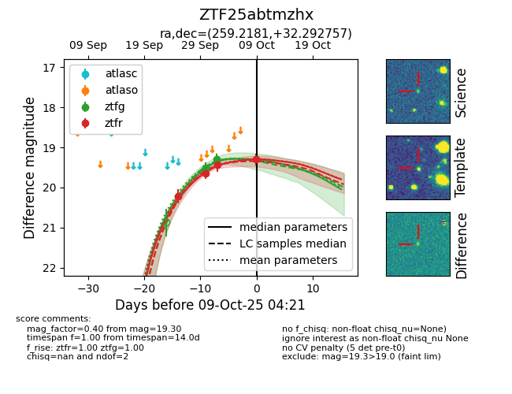
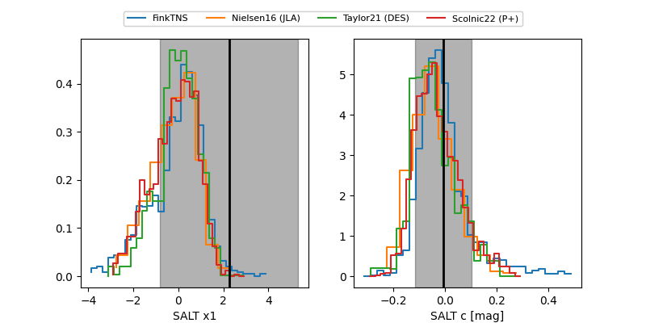

FINK: ZTF25abtmzhx
Lasair: ZTF25abtmzhx
ALeRCE: ZTF25abtmzhx
ZTF25abtmzhx (ztf,fink)
equatorial (ra, dec) = (259.2181,+32.29276)
galactic (l, b) = (55.4407,+33.04523)


last ztfg=19.30, ztfr=19.30
2 ztfg, 4 ztfr detections